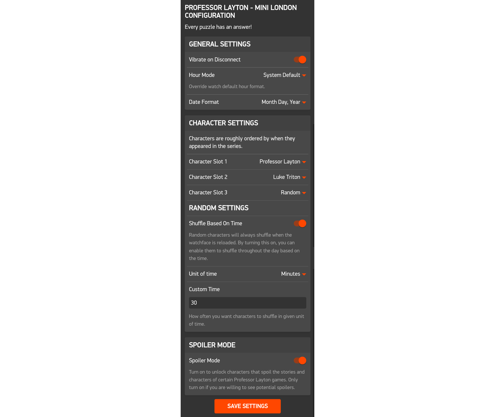
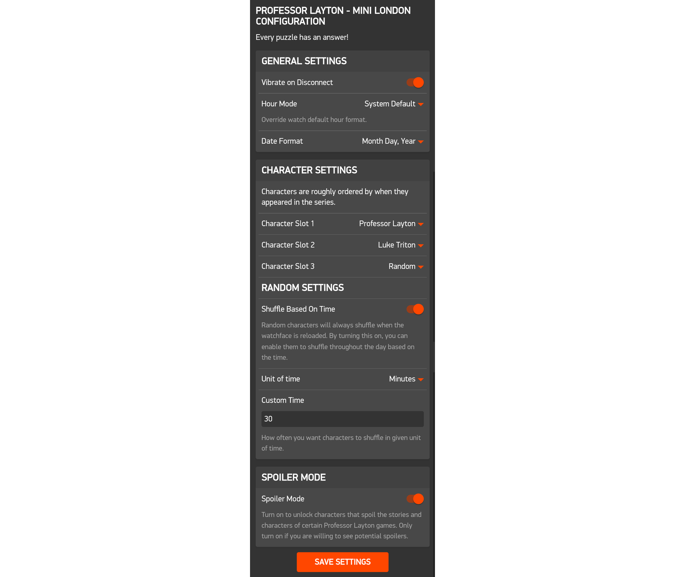
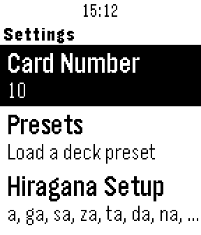
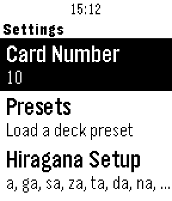

Pebble App Development
What is it?
Pebble was one of the first smartwatches to hit the market back in 2013 after a successful Kickstarter campaign (the most successful ever at the time). However, at the end of 2016, Pebble was bought out by Fitbit who was then bought out by Google, and now they are long gone. Luckily, even though official support for Pebble watches is no more, the Rebble community has stepped up to the plate to keep the watch alive for people still using it. It's an awesome community project that I am quite grateful for as a longtime Pebble user.
One of the best aspects of the Pebble/Rebble ecosystem is all the custom software available. Since its inception, Pebble has always been very developer driven, so anyone is free to make anything they want for the watch and upload it to the store. I’ve had my Pebble for more than 6 years now, and it’s something I use daily. So, if there is anything I feel is lacking, there is nothing stopping me from just making it and uploading it for anyone to use! This page documents some of the things I have made for the platform.
How?
As mentioned, Pebble has been very developer driven from the beginning and as such documentation for everything relating to building software for the watch is available. Since they have been closed, the Rebble community has maintained all the documentation. It’s a bit scattered and has quite a few broken links, but the core functionality remains. Apps for Pebble can either be “watchfaces'' or “watch apps”, both of which are written in C. In addition, you can also use JavaScript to add web content to your application such as showing the weather on a watchface.
Back when Pebble was around, you were able to use a cloud based development environment called CloudPebble. It was very convenient and accessible, however that has since been shut down leaving only the local SDK. For my purposes, I use a Linux Virtual Machine image provided by the Rebble community. It has the SDK alongside some other tools already loaded making it fairly simple to begin programming.
Professor Layton - Mini London
What is it?
In my time as a Pebble user, I’ve come across and used many watchfaces, much of them themed around pop culture. Through the passion from developers, you can find watchfaces for most popular pieces of media, however one that was lacking in my eyes was one based on the Professor Layton games. It’s a series that first began in 2007 on the Nintendo DS. Since then, it has had several games, plenty of merchandise and even an animated feature film. It’s a franchise that is near and dear to me. In 2023, there was an announcement of a new Professor Layton game, which reignited the flames of a seemingly dead franchise. This announcement finally gave me the motivation to fill the top hat shaped hole in my watch.
The final product is a fully customizable watchface that showcases many characters from across the Professor Layton series. You can change the date and time format and choose from up to 30 characters to appear among 3 slots. Some other features include the ability to assign a random character and have it be shuffled based on a user-defined time interval and the Spoiler Mode that hides characters that could be considered spoilers from being selected. I’m very happy with how it turned out, and the reception among the community has been positive as well. You can check it out here or in the download section on this page. If you have a Pebble Time/Round and you want to use the watchface yourself, open the Pebble app and navigate to the App Store. Any search relating to “Layton'' should make it appear, just tap add and you’ll be good to go!
How?
To start off, I needed to figure out what I wanted to watchface to look like. Using photo editing software, I was able to make a mockup of the watchface’s design. Something to keep in mind is that I am not an artist, in fact, I am quite terrible when it comes to any sort of visuals. I knew if I was going to do something, it would have to adapt from some already existing piece of art. My original idea was to incorporate the Layton logo into a clock. My attempts to do so failed tremendously. After a lot of thought, I figured out an idea that I thought may work. Inspired by some other watchfaces such as toriwatch, waniwatch, or this Pokémon watchface, I realized I could leverage the magic of pixel art. After some research, not only did I find that this would be possible, but there was already a high quality source of art to pull from. There was a side mode included in one of the Professor Layton titles called “London Life.” In it, you lived your life in London amongst the characters from the game. That entire side game was made using pixel art and had sprites for almost every major character in the franchise at the time that I could pull from. With this new set of assets, I created the final design and came up with the concept of allowing the user to choose which characters appear on the watchface.
Implementing my concept had a few challenges. First there were the hardware limitations. There are four models of Pebble, and only two of them (the “Time” series) have support for color. I decided pretty early that I wasn’t going to support the black and white models, so I didn’t have to worry about creating a set of monochrome sprites. However, the color screens can only display 64 colors. I needed to make sure that all the images would display properly since they were created with far more colors at their disposal. If you try to display a color that the watch isn’t physically able to display, the software will simply round it to the nearest value it can display. It generally does a good job of choosing the right colors, but there are times where it can completely throw off an image. So to get the best results, I decided to manually go in and adjust each character and tweak their colors to best display on the screen.
Once I had all my character images ready to go, I had to recreate my design template in code. This is relatively straightforward, but it is a bit tedious since it’s a lot of trial and error to line everything up just right. This is where my second hardware limitation became an issue. Out of the two models I was developing for, one was a square screen with a resolution of 144x168 and the other had a round screen with a resolution of 180x180. This difference means you have to essentially make two separate layouts to accommodate both displays. This can be a tricky process, since something that looks good on one display may not translate to the other. However, after much trial and error, I created a design I was happy with for both models.
The final part of the process was allowing the user to customize the watchface. In the Pebble ecosystem, this can be done with a HTML page that can be accessed through the phone the watch is connected to. Luckily, there is a widely used framework that allows for a much easier creation of configurations screen called Clay. Clay allows you to use JSON to layout your configuration page and will generate everything for you. You can then use the AppMessage/MessageKey subsystem to exchange the data from the configuration page to the app itself. Using Clay is relatively simple once you understand how it works and it’s an extremely powerful tool in the Pebble toolkit. One important feature of Clay is the ability to add custom functionality using JavaScript. This was essential in implementing spoiler mode to hide spoiler characters from appearing.
After that was done, all that was left was to upload the watchface the Rebble Appstore and share it with the community. All in all, developing this watchface was a great learning experience. I’m condensing and omitting a lot of the development process for this post, but there was a lot to figure out. This was my first Pebble related project and my first real project using C (outside of some class assignments). There were a lot of mistakes and many hours of frustration trying to get this watchface to work, but it was all part of the experience. I learned a lot from making this and I’m very proud with how it turned out. It was just one big puzzle to solve and I’ve now left my mark on the Rebble community.
Status
This watchface is considered complete. I will consider updating it if someone reports a bug or asks for a specific feature, but otherwise it is finished. It is avaiable to download from the Rebble appstore which can be accessed from the Pebble app on mobile or the link on this page alongside the GitHub repository.
Images

 

Koishi - Japanese Kana Flashcards
What is it?
At the start of 2023, I was beginning to prepare for a semester abroad in Japan. Part of the preparation process was learning some basic Japanese, particularly the phonetic character sets Hiragana and Katakana. There are quite a few kana to learn and one great way of studying is by using flashcards. I used several flashcard apps on my phone or online to help me study, but I realized it would be great if I could have my flashcards on my watch. It’s a good excuse to make another Pebble app, so I decided to make it.
The final product is called Koshi, which is pebble or small rock in Japanese. The app allows you to create decks of up to 100 cards consisting of all the Hiragana and Katakana characters (208 characters in total). It is fully customizable, allowing you to select how many cards you want in a deck and which specific kana you want to be able to appear. Additionally, there are deck presets that allow you to load common configurations of kana to study. It ended up being a lot more challenging to make than I had originally expected, but I’m happy with how it turned out.
You can check it out here or on the download section on this page. If you have a Pebble and want to download the app for yourself, you can do so by opening the Pebble app on your phone and searching “Koishi” on the app store. There are some other apps with the same name, so make sure you get the one with the hiragana “a” symbol as the icon. It’s available for all Pebble models, so feel free to use it as an excuse to start learning some Japanese!
How?
I had a few goals with this app. First, I wanted it to be available on all Pebble models. My last project for Pebble was limited to the “Time” series because of their color displays. However, that wasn’t the case this time and I wanted to see if I could make it happen. Second, I wanted to have a simple interface for the flashcard system. Some flashcards apps allow you to check off whether you got a flashcard right and have complex algorithms to try to determine which cards are the best to show you. I wanted to bypass all that and create a basic flashcard game. Not only does this make development easier, but I personally prefer it to more complicated alternatives. Lastly, I wanted the ability to customize which kana appear. Throughout my study, one annoyance I kept running into was apps giving you flashcards for the entire set of characters and not allowing you to choose what to study. It can be quite annoying when you are learning them bit by bit and just want to study a small group of them. So having this functionality was crucial. With my goals in mind, I got started.
Since my previous experience developing for Pebble was making a watchface, I had a lot to figure out in terms of making a watch app. They are quite different in what they achieve and have unique implementations. My first major goal was to get the entire menu tree implemented. My idea was that if I had the menu, I could add each component of the app window by window until it was complete. Figuring out how to get the menu setup was a bit tricky however. The Pebble documentation can be all over the place at times due to Pebble no longer being around and many of the example links being broken. However, after searching, I finally found an example project that helped me understand how menus are implemented. After a good bit of trial and error, I got a good understanding of how it worked and got the menu framework in.
From there, my next goal was to set up all the data needed for deck customization. In my experience, making sure your data is structured in a sensible and smart way can be the key to a cohesive program (coding wise at least). If your data is unorganized and not tailored for your needs, it can be particularly difficult to parse it. With that in mind, I took some time to design out how I intended my data structure to work with the rest of the app. Essentially, I was going to have two boolean arrays that stored which groups of hiragana and katakana characters you wanted to study. With that data, I would then have code that would take those arrays and create a struct that represented a card. I would then use all the created cards, shuffle them and create a struct that represented a deck of flashcards with all the selected cards within. I implemented the selection arrays and linked it to the UI and had a working selectable menu. At that time, I also implemented the preset system which just manually sets the values in the selection arrays based on what the user selected. Finally, I implemented the ability to select the amount of cards within a deck. I added this out of caution for hardware limitation, which I’ll touch on some more later.
Before I could move onto creating the actual deck and card navigation system, I need to make sure that all that data that was just set by the user is saved between sessions. It’s not very useful if the user has to manually set their preferred configuration each time they open the app. I took advantage of the persistent storage API, which allows you to store data on the watch itself. While I did store some variables in their primitive form, most things I put into a struct first before storing which made things easier to work with.
With all my data figured out, I could finally start on the actual deck and flashcard system. I first wanted to establish a working layout before I got to generating the cards. A Pebble watch has 4 buttons, one back button on the left side of the watch and then an up, center, and down button on the right. The right side buttons are commonly used for navigation, and that would be no different here. My idea was you would use the up and down button to move backwards and forwards through the deck respectively and then the center button to “flip” the card and show the answer. Accessing the button presses is easy, and by using a placeholder image, I was able to move through the deck. An extra detail I added was the Action Bar on the right side of the screen. It’s a small guide as to what each button does and helps make the app easier to understand and use. The Action Bar is a built-in feature in the Pebble SDK. The tradeoff is that it makes your usable area smaller since the right side of the display is used for the bar. This is where the difference between the square and round displays started to become more apparent and I needed to tweak the layout to best account for both. Lastly, I added the status bar at the top which shows the time. This is another built-in feature that is recommended to be used whenever your app is designed for extended use. You don’t want to lose the core functionality of a watch after all.
The next step is where I hit my first of two roadblocks. One big issue with an app like this is that the Pebble watch does not natively support any non-latin characters. This means, if you try to display Japanese text on a Pebble, it will just show empty boxes. There are 3rd party language packs that can be downloaded that allow the watch to show non-supported characters, however I didn’t want to require the user to download anything, so I could not rely on that. The next best solution was to use images. I could simply load an image for each kana and then display it when needed. This solution works in theory but has two major issues to overcome. First, finding a set of consistent, semi-low resolution kana images proved to be difficult. Most images online are either massive charts instead of individual characters, or have a limited set of characters. The few complete sets I could find either did not look good when scaled down or had overly stylized fonts that wouldn’t work for my purposes. The second, and arguably bigger issue, is hardware limitations. As mentioned, one of my goals is to be compatible with all models of Pebble. Later Pebble models got more processing power, memory and storage which makes developing for them much easier. However, the original Pebble, also known as Aplite, had much lower specs. The one I was concerned about was the 128KB limit for resources, including images. There are a total of 208 hiragana and katakana, which means each kana image had to be about 600 bytes or less. For these reasons, I knew I had to make all the kana images by hand to meet my needs. My goal first and foremost was to find a balance between quality and size that would meet my byte limit. Initially, I was getting files that were over 1000 bytes, however with a lot of trial and error in adjusting the image size, color depth (in this case transparency rather than color since it was black and white to begin with) and using online compression tools, I was able to get the files anywhere between 400-600 bytes.
Once I had figured out how to best make the images, I then had to take the time to actually make them all. It was quite a long process and it took many hours to create, export, compress and then load all the images. Once I loaded them all however, I ran into my second roadblock. After all that work, ensuring that the files were small enough (they totaled around 75KB in the end), they ended up being too large and the compiler threw an error. I was devastated, but knew there had to be a solution, I had to be missing something.I looked all over the documentation trying to figure out what was happening. I completely re-made the images at a lower quality but even then it wouldn’t work. After being stuck for many days, I sent a message on the Rebble Alliance Discord server asking for any advice. The server is filled with many great developers who have been doing this much longer than I have. After some back and forward, we figured out what the issue was. Some point during the development of the Pebble SDK, they updated the way resources were loaded. The system they used made the Aplite platform prioritize memory efficiency when loading images, which meant they were loaded in a way that made it faster to load in memory. This was done to better accommodate Aplite’s slower memory. However, in that process, the size of each image ever so slightly increased, but when that process is done over 200 times, it causes everything to balloon in size. The solution was to simply add an attribute that told the compiler to prioritize storage efficiency over memory efficiency. Since we were only loading the images one at a time, the memory efficiency loss was not perceptible. This issue alone cost me many days of work time which is quite frustrating, but that’s part of the process. Huge thanks to the Rebble Alliance Discord for helping diagnose the problem, otherwise the project would have ended there.
With all the images able to be loaded, the final step was to actually create a flashcard. Each card has an image and a text component attached to them. I did a lot of experimenting with different approaches to best create the cards. I tried making all the cards manually and then selecting them based on what the user chose, but I was getting some memory errors when I essentially loaded all the cards at once. I had to rethink my strategy a few times, but I eventually came up with a system that could load the cards probably and much more efficiently. With that added, the core functionality of the app was finished and I moved onto polishing and testing to make sure everything functioned properly on each watch model.
Once I finished all my testing, I was ready to publish to the appstore. I created all the images and such needed for the store page and published it. Like my last Pebble project, this was a lot of work and it was quite the learning experience working through all the issues. But I’m quite happy with how it turned out and I do plan to use it while I’m practicing my Japanese.
Status
This watchapp is considered complete. I will consider updating it if someone reports a bug or asks for a specific feature, but otherwise it is finished. It is avaiable to download from the Rebble appstore which can be accessed from the Pebble app on mobile or the link on this page alongside the GitHub repository.
Images

 
